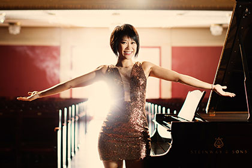
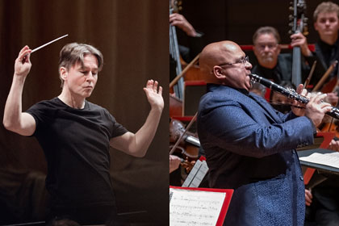

Music
Philadelphia Orchestra
2023-2024 Season Highlights
Opening Night
September 28 | Verizon Hall | 7 pm

Performance Details
Yannick and Your Philadelphia Orchestra begin the Orchestra’s 124th season with a spectacular celebration! Presidential Medal of Freedom winner Yo-Yo Ma performs a work that has special meaning for him—Shostakovich’s Cello Concerto No. 1, written for the great Russian cellist Mstislav Rostropovich. Ma first heard the work as a 15-year-old, already making his mark on the music world, and it moved him profoundly: “I couldn’t sleep that night.” Fiendishly challenging for the player and deeply rewarding for the audience, this cello masterwork shows Ma at the peak of his artistry.
Rachmaninoff composed his deeply spiritual Symphonic Dances in 1940, the twilight of his career. His final composition quotes the “Dies irae” from the Requiem Mass in the midst of the dances. The lovely, lyrical alto saxophone in the first dance; the haunting violin solo and eerie waltz in the second; and the ethereal, delicate sounds of the glockenspiel, harp, and piano in the third build to a spectacular finale, evoking a battle between good and evil, spiritual and profane, ending in a bold and racing burst of triumph. A brilliant coda to a life of astonishing gifts.
Jennifer Higdon’s Fanfare Ritmico bursts with energy. The three-time GRAMMY Award–winning composer wrote this piece on the cusp of the new millennium, noting that it “celebrates that rhythmic motion of man and machine, and the energy which permeates every moment of our being in the new century.”
Audra McDonald
October 3 | Verizon Hall | 7:30 pm

Performance Details
Revel in the “lovely, natural, warm sound” (Gramophone) of “a God-touched voice” (The New York Times) when this Tony-, GRAMMY-, and Emmy-winning star of stage and screen returns! Winner of more Tony Awards (six) than any other actress in history, Audra McDonald possesses a blissfully beautiful full lyric soprano and the acting chops to wow audiences even in non-musical performances. Famed for her roles in Ragtime, Gershwin’s Porgy and Bess, Lady Day at Emerson’s Bar and Grill, and many more Broadway classics, she has also become a favorite with television audiences for her riveting characters in CBS’s The Good Wife and The Good Fight and the HBO hit The Gilded Age. McDonald is a sought-after soloist, clamored for by fans of show tunes, opera, and the American Songbook. Leading Broadway conductor Andy Einhorn (Hello, Dolly!, Carousel) joins her in a not-to-be-missed performance with Your Philadelphia Orchestra.
Yannick and Hélène Grimaud Reunite
December 7, 7:30 pm| December 9, 8:00 pm |
December 10, 2:00 pm |
Verizon Hall
Performance Details
Philadelphia Orchestra commission)
Yannick and Hélène Grimaud have performed together all over the world, and the passion of their inspired partnership shines in this performance of the Mozart Piano Concerto No. 20, a showcase for Grimaud’s acclaimed artistry. A recent review of her performance of this work praised her “impeccable technique and concentration … her phenomenally strong, yet nimble fingers moved with an assertive energy” (Bachtrack).
This concert continues Yannick and the Orchestra’s exploration of the music of Florence Price, whose music was lost to generations and has only recently come to be considered some of the greatest of 20th-century American music. Although she composed more than 400 works, most of it was never publicly performed; in a letter to famed conductor Serge Koussevitsky, Price wrote, “I have two handicaps—those of sex and race.” Price’s Fourth Symphony, written in 1945, was presumed lost until discovered among a nest of her papers in an abandoned house that had once been her summer home. In this, her final symphony, Price incorporates melodies from spirituals, including a beautifully orchestrated theme from “Wade in the Water,” and the third movement embraces a traditional Juba dance—a syncopated stamping, clapping movement to a rhythm that was a precursor to ragtime.
Brahm's German Requiem
January 26-28 | Verizon Hall | 2:00 and 8:00 pm

Performance Details
Philadelphia Orchestra co-commission)
From Mozart to Berlioz to Britten, great composers have poured their souls into settings of the requiem mass. Unique among them is Brahms’s utterly beautiful A German Requiem, written after the death of his mother, with its emphasis not on the dead, but on those left behind; not on loss, but on the joy of remembrance. From its opening phrase, “Blessed are they that mourn, for they shall be comforted,” to its transporting finale of triumph and tranquility, it touches the hearts of all who hear it.
Written with the intention of being paired with Brahms’s Requiem, Cuban-Canadian composer Luis Ernesto Peña Laguna’s choral work Oraison was created in reaction to the COVID pandemic. Sung in four languages—French, Spanish, Latin, and English—it ends on a note of joyful hope as the chorus sings in French, “We emerge/Barefoot on the rosy meadows/At the first morning sun.”
Another cause for joy: There’s an extraordinary, palpable energy in the hall when musicians who have special regard for each other come together in performance. And that’s what you can expect when Yannick welcomes the preeminent violinist Gil Shaham back for the world premiere of Mason Bates’s Violin Concerto, a piece co-commissioned by the Orchestra. Bates’s “stunning, staggering, stupendous” (Classical Voice North America) Piano Concerto thrilled Philadelphia Orchestra audiences in 2022; now you can hear this heralded composer’s newest work with a violinist beloved by audiences around the world.
John Williams with Yo-Yo Ma
February 20 | Verizon Hall | 7:30 pm

Performance Details
With an astonishing 25 GRAMMY® Awards (out of a staggering 73 nominations) and five Oscars, John Williams is one of the most prolific and beloved film composers of all time, with unforgettable scores including Jaws; Close Encounters of the Third Kind; the Star Wars, Indiana Jones, and Harry Potter films; Schindler’s List, and dozens more. But his talents go far beyond the movies.
In this one-night-only performance, Williams conducts a moving, memory-stirring selection of music from his films, and welcomes his long-time friend and 19-time GRAMMY winner Yo-Yo Ma for a performance of his Cello Concerto.
The Concerto transports the listener, from its opening theme “as effective an introduction to a character as the first five minutes of any Spielberg film” (The Washington Post) to its lyrical, poignant finale. It’s a rare opportunity to hear two towering artists who have shaped much of the musical world of the past half-century, on stage together in a joyful reunion!
Carmina burana
March 15-17 | Verizon Hall | 2:00 and 8:00 pm

Performance Details
When composer Carl Orff stumbled across a collection of medieval poems and songs in the mid-1930s, it was a treasure trove. Tucked away in a Benedictine abbey near Munich, the original manuscript contained hundreds of secular poems and songs written by university students preparing for the priesthood. Despite their holy career goals, these students wrote about earthly, even bawdy themes of wine, women, and song, and dreamed of a pagan goddess called Fortuna, who controlled humans’ fate with the spin of a wheel. Orff, taken with the imagery of the writing, worked with a Latin scholar to choose 24 of the songs and assembled them into his “scenic cantata” Carmina burana. The result, an hour-long work of choral and orchestral genius, seizes the listener’s sonic imagination with its roaring choruses, pulse-raising rhythms, monastic chants, and sighing lyricism, filled with images of youth bursting with love and longing. This music has thrilled audiences inside the concert hall and beyond, popping up frequently in film and television scores and commercials, perhaps one of the best-known and best-loved works in the repertoire.
This program of classics begins with one of The Philadelphia Orchestra’s most welcome guests, pianist Emanuel Ax, performing Mozart’s grandest piano concerto, No. 25. Ax’s popularity is based on his innate musicality and a rigorous technique informed by a deep love of the music. The Washington Post calls him “an extremely satisfying pianist; he is at home in a wide variety of music and his pianism is always thoughtful, lyrical, lustrous.” Ax counts Mozart among his favorite composers, noting that “Mozart was an opera guy, a theater person, and the concertos are absolutely a part of that. I think there’s a grandeur about this piece [Piano Concerto No. 25] that is so wonderful, so big … the slow movement is pure magic.”
GRAMMY® Award–winning Italian conductor Fabio Luisi, renowned for his passion at the podium, has won rave reviews for his “exhilarating, thrilling, dynamic” performances (San Francisco Classical Voice). Fun fact: When not busy conducting, Luisi is a passionate perfume maker.
Spotlight Series: Yuja Wang
April 30 | Verizon Hall | 8:00 pm
Performance Details
Yuja Wang Piano
Phildelphia Orchestra does not appear
Born into a musical family in Beijing, Yuja Wang began playing the piano at age six, and in her early 20s she debuted with The Philadelphia Orchestra, the New York Philharmonic, and the San Francisco and Chicago symphonies. Her stage presence is electrifying and audiences around the world flock to hear her play, as evidenced by her sold-out Philadelphia Orchestra performances last season. Hear a “rapturously eloquent” pianist of “scintillating brilliance” (The Telegraph, London).
Salonen Conducts Sibelius
May 9-11 | Verizon Hall | 7:30, 2:00, 8:00pm
Performance Details
Intensely personal and unfailingly compelling, Sibelius’s music astonishes, thrills, soothes, and beguiles. His profound love of nature is vividly present in his Fifth Symphony, with its famous finale inspired by the sight of a flock of swans flying overhead. Famed Finnish conductor and composer Esa-Pekka Salonen is renowned for his reading of his fellow countryman’s works. He also brings a work of his own: Kínēma, a brilliant showcase for Philadelphia Orchestra Principal Clarinet Ricardo Morales.
Mitsuko Uchida Plays Ravel
May 30, June 1-2 | Verizon Hall | 7:30, 8:00, and 2:00 pm

Performance Details
Philadelphia Orchestra commission)
Brilliant colors and shifting moods mesmerize in this electrifying program! GRAMMY Award–winning pianist Mitsuko Uchida brings a “lightness of touch and tonal sparkle” (Bachtrack) to Ravel’s jazzy, joyous Piano Concerto in G major; Yannick reveals the magic and mystery of Debussy’s La Mer. The concert’s centerpiece is an exciting new work—the Orchestra’s fourth commission from acclaimed composer Valerie Coleman.
Yannick Conducts La bòheme
June 7 & 9 | Verizon Hall | 8:00 and 2:00 pm

Performance Details
With its ravishing melodies, soaring arias, and romantic story of love among young artists in Paris, Puccini’s La bohème has captured the hearts of audiences since its 1896 premiere. Yannick Nézet-Séguin leads this theatrically enhanced performance, with acclaimed soloists in costume performing amid creative props and set pieces as the Orchestra brings Puccini’s immortal score vividly to life.
A theatrically inspired presentation blends the best of the concert and opera experience. The Orchestra performs on stage instead of in the pit, bringing the full power and intricacies of the score front and center.
Extended List of Philadelphia Orchestra of Events and Tickets
Curtis Institute of Music
2023-2024 Season Highlights
Spetacular Strauss | Orchestra and Opera
October 22, 2023 | Verizon Hall | 7:00 pm
Yannick Nézet-Séguin, the Curtis Symphony Orchestra, and rising stars of the Curtis Opera Theatre kick off the 2023–24 season with a tribute to Richard Strauss. A celebration of the German Romantic composer’s life and legacy, the program features highlights from some of his most popular operas and scales the spectacular heights of his final tone poem, An Alpine Symphony. This breathtaking work depicts a perilous mountain-climbing expedition from the composer’s childhood, capturing the brilliance of a blazing sunrise over the Alps, the wonder of cascading waterfalls, the pastoral sounds of bleating sheep, and the terrifying violence of a raging thunderstorm.
Under the baton of second-year student Micah Gleason, Curtis’s Rita E. Hauser Conducting Fellow, the evening opens with a dramatic instrumental interpretation of the composer’s “Dance of the Seven Veils” from his harrowing psychodrama Salome. Based on the scandalous play by Oscar Wilde, this one-act masterpiece recounts the Biblical story of a princess who becomes infatuated with the prophet, Jokanaan (John the Baptist). Beneath the iconic scene’s lush chromaticism is a discordant waltz that builds to a feverish frenzy as Salome removes each of her veils in sensuous dance and spirals deeper into madness.
This striking early 20th-century classic is followed by three riveting performances from two of Strauss’s most popular operatic works. His satirical 1912 opera within an opera, Ariadne auf Naxos, is a theatrical battle between lighthearted comedy and dramatic tragedy. In the quintet “Die Dame gibt mit trübem Sinn,” the commedia dell’arte troupe of Brighella, Truffaldino, Scaramuccio, Harlequin, and the saucy comedienne Zerbinetta, attempt to lift the spirits of the inconsolable Ariadne with a charming song and dance number. This moment of comic levity is followed by the Act II opening of Strauss’s Der Rosenkavalier, featuring the ceremonious presentation of a silver rose and a rapturous love duet. The set concludes with the opera’s sublime Act III trio, as the Marschallin blesses the union of young lovers Octavian and Sophie.
L'Allegro, Il Penseroso ed Il Moderato | Opera
November 10, 2023 at 7:30 pm | Philadelphia Film Center | November 12, 2023 at 2:30 pm
Inspired by the poetry of 17th-century English writer John Milton, author of the epic Paradise Lost, Handel’s magnificent pastoral ode, L’Allegro, il Penseroso ed il Moderato (The Cheerful Man, the Thoughtful Man, and the Moderate Man), launches the Curtis Opera Theatre season at the Philadelphia Film Center with a stunning theatrical oratorio led by conductor Nic McGegan and acclaimed director Chas Rader-Shieber. This feast for the senses, featuring a thrilling cast of young opera stars and the renowned Curtis Symphony Orchestra, is a breathtaking collision of darkness and light, innocence and experience, and a celebration of the wonders of nature and the mysteries of life.
Beethoven and More | Orchestra
November 18, 2023 | Verizon Hall | 3:00 pm
Acclaimed conductor Michael Stern (’86) leads the Curtis Symphony Orchestra in an evening of extraordinary emotional contrasts. The program opens with the quiet whisper of one of classical music’s most intimate, impassioned masterpieces, Beethoven’s transcendent Violin Concerto in D major, featuring internationally renowned violinist Pamela Frank. The concert concludes with another classical music masterpiece to be revealed in the coming months.
Nate's World | Curtis Presents
January 30, 2024 | Curtis Institute of Music, Field Concert Hall | 7:30pm
The 2023–24 Curtis Presents season kicks off with the return of acclaimed alumnus Nathan Farrington (ʼ06), principal bassist for LA Opera Orchestra, as he takes listeners on an adventurous musical safari through Nate’s World. He is joined by composer, pianist, and clarinetist Teddy Abrams (Conducting ’08), music director of the Louisville Orchestra and the Britt Festival, and New York City-based percussionist, composer, and educator Gabriel Globus-Hoenich (ʼ08), for an evening of unexpected surprises. This genre-hopping concert features a diverse landscape of styles, with a program written, arranged, and performed according to the trio’s current musical passions, from classical to country and everything in between.
String Sextets | Curtis Presents
February 27, 2024 | Curtis Institute of Music, Field Concert Hall | 7:30pm
Curtis on Tour presents an evening with acclaimed violinist and Curtis faculty member Benjamin Beilman (’12), former Dover Quartet violist Milena Pajaro-van de Stadt (’10, ’11, ’14), award-winning cellist Oliver Herbert (’19), and emerging professional artists from Curtis for the memorable evening of chamber music. This phenomenal sextet presents Richard Strauss’s richly scored Sextet from his luminous final opera Capriccio, Alban Berg’s colorful and chromatic transcription of his Piano Sonata in B minor, Johannes Brahms’s ethereal String Sextet No. 2 in G major, and a newly commissioned work composed by Curtis alumna Alyssa Weinberg (’16).
Ra, Mackey, and Tchaikovsky | Orchestra
March 9, 2024 | Verizon Hall | 3:00 pm
Renowned conductor Robert Spano leads the Curtis Symphony Orchestra in the final concert of its bold and ambitious 2023–24 season, a remarkable program featuring two exhilarating world premieres and a late-Romantic era classic. The afternoon opens with a newly commissioned work by James Ra. Praised by the Philadelphia Inquirer as “a composer to watch,” Ra’s compositions have been described as “coursing with adrenaline-pumping energy.”
The program continues with GRAMMY Award-winning Curtis composition faculty member Steven Mackey’s Concerto for Electric Guitar, featuring the jaw-dropping virtuosity of guitarist JIJI, followed by Tchaikovsky’s impassioned, intensely personal Symphony No. 6 (“Pathétique”).
Kimmel Cultural Campus Presents:
The Jazz Series 2023-2024
Samara Joy: A Joyful Holiday!
December 22 | Miller Theatre | 7:30 pm

About the Artist
Samara Joy, one of jazz’s newest stars, celebrates the holidays on the Kimmel Campus! With her GRAMMY Award-winning Verve Records debut, Linger Awhile, 23-year-old Bronx native Samara Joy makes her case to join the likes of Sarah, Ella, and Billie as the next mononymous jazz singing sensation recorded by the venerable label.
Her voice, rich and velevty yet precociously refined, has already earned her fans like Anita Baker and Regina King, appearances on the TODAY Show, The Tonight Show with Jimmy Fallon, The Late Show with Stephen Colbert, CBS Mornings, MSNBC, Kelly Clarkson, Jennifer Hudson, Drew Barrymore, etc. in addition to millions of likes on TikTok - cementing her status as perhaps the first Gen Z singing star.
On Linger Awhile, Samara introduces that massive audience to a slew of classic standards several times older than she is through her timeless, irresistable sound. The New York Times praised the "silky-voiced rising star" for "helping jazz take a youthful turn" while NPR All Things Considered named her a "classic jazz singer from a new generation. In February 2023, Samara Joy took home two GRAMMY - Best Jazz Vocal Album and the auspicious Best New Artist award.
Tickets from $45-$75
Jazz at Lincoln Center Orchestra with Wynton Marsalis
Max Roach Centennial Celebration
January 21, 2024 | Verizon Hall | 5:00 pm

About the Artist
Revered as one of the greatest jazz drummers of all time, Max Roach was among the first to use music to address the racial, political, and social issues of his time. The Jazz at Lincoln Center Orchestra (JLCO) celebrates the centennial of this pioneering legend, master musician and innovative bandleader who spanned a diverse range of styles that influenced generations to follow.
In 1961, after having been an influential member of the Charlie Parker-Dizzy Gillespie Quintet, pioneering bebop, and performing alongside Miles Davis’ seminal “Birth of the Cool” album, and a founder of the Clifford Brown-Max Roach Quintet, Roach went on to make albums with his wife, the trailblazing singer and songwriter Abbey Lincoln. At the time, he told DownBeat Magazine that he would “never again play anything” that did not “have social significance.”
The JLCO comprises 15 of today's finest jazz soloists and ensemble players. Under Music Director Wynton Marsalis, the JLCO performs a vast repertoire, from rare historic compositions to Jazz at Lincoln Center-commissioned works, including compositions and arrangements by Duke Ellington, Thelonious Monk, Mary Lou Williams, Benny Goodman, and many others.
Tickets from $55-$95